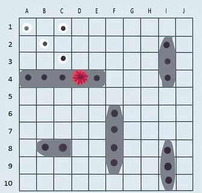

This is a board game that can be played between two players or more. The standard Battleship board game comes with two set of boxes, each for one player. In a case however where the boxes are not enough for two players,a papaer graph can work as a substitute.
To get a functional visual representation of how the game works, Click Here!
In Battleship, ships come in various lengths, taking up a different number of squares on the grid. You and your opponent should both have identical collections with 5 ships each as well as plenty of white and red pegs. The typical 5 ships include:
You and your opponent must place your 5 ships on the grid of your boxes. Do not look at what your opponent is doing, and make sure they can not see your ship configuration either. Follow these rules while placing your ships:
After deciding on who should start, the one playing should call their shot to try and hit the opponent's ships. Clling a shot means that the player should pick a target hole on their upper grid and call out its coordinates(which can be named in terms of numbers and letters). To determine each coordinate, find its corresponding number on the left side of the grid and its letter on the top
If the player calls out a shot location that is occupied by a ship,the shot qualifies as a hit! The opponent then says the ship that has been hit. The player records the hit by placing a red peg in the corresponding target hole in their target grid. The opponent too places a red peg in the corresponding hole of the ship the player has hit on their ocean grid
However, if the player calls out a location not occupied by a ship on the opponent's ocean grid, it is considered a miss! The player records their miss by placing a white peg in the corresponding target hole on their target grid so as not to call it again. On the other hand, the opponent can choose not to mark the player's miss on their ocean grid
To win a game, one player has to sink all the ships of the other player. Sinking a ship simply translates to all the coordinates of a ship's position being hit, in that all its holes are filled with red pegs. The owner of the ship should announce when a ship is sunk and what ship it was. The player should keep track of how many of their opponent's ship they have sunk by placing a red flag for each ship sunk at the top of the game